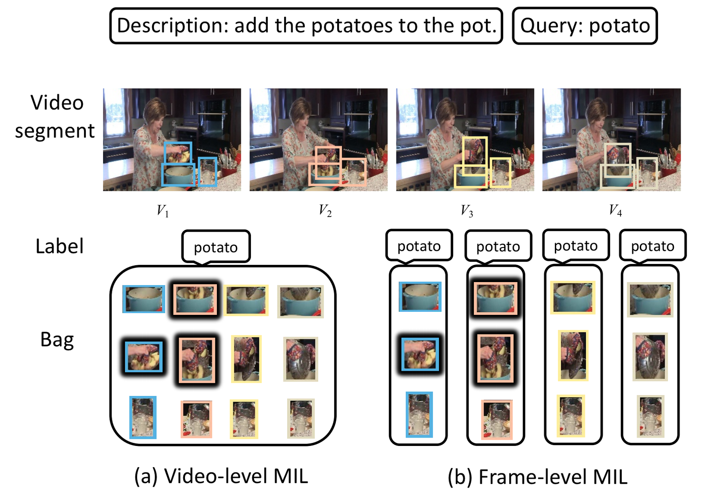
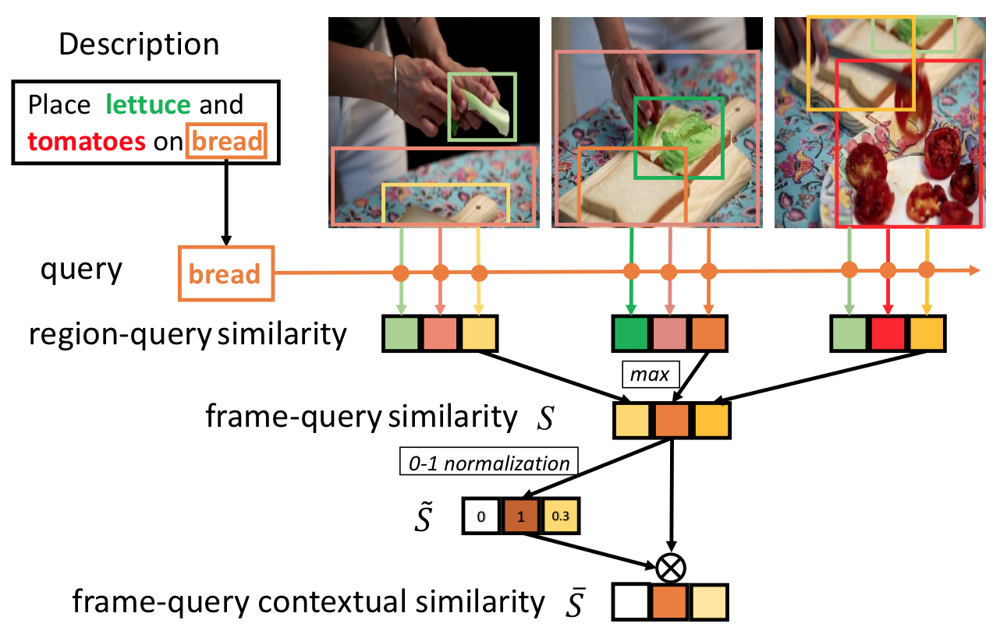
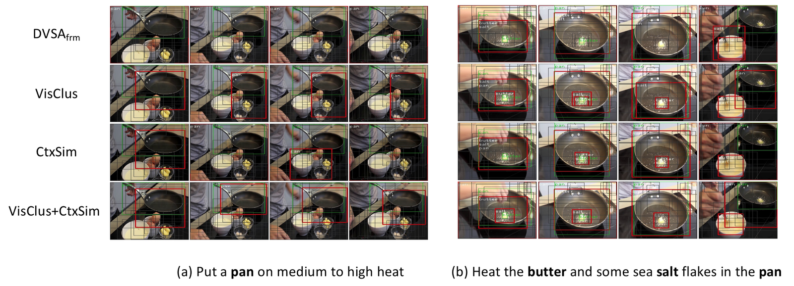
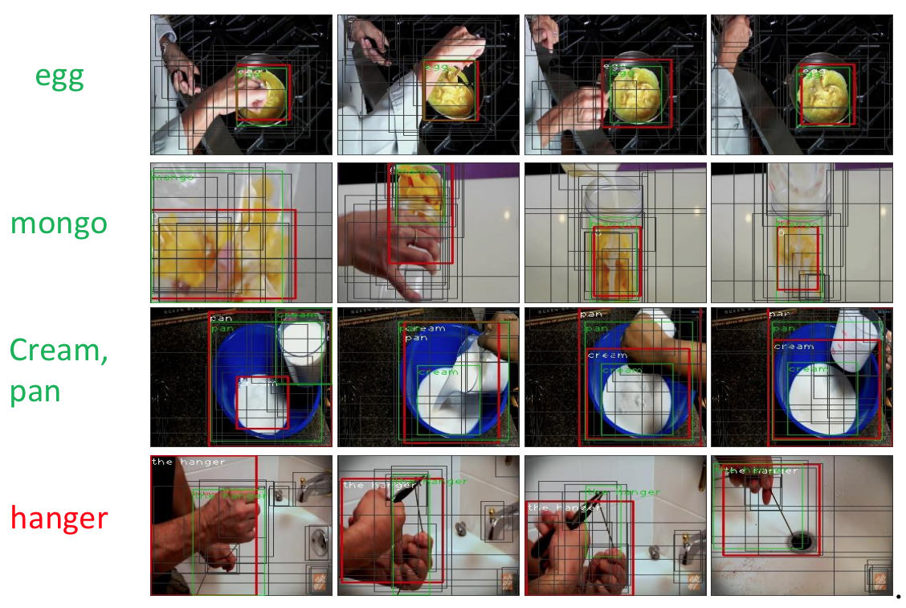

Grounding textual signals to visual-spatial regions have various applications, e.g., robotics, human-computer interaction, and image retrieval. While visual grounding in static images has witnessed great progress, visual grounding in videos is still challenging: first, a video contains many frames, which induces the temporal visual-language alignment problem that is unique to video grounding; second, despite rich source of online videos, constructing a large scale video dataset with grounding annotation is expensive and time-consuming. Therefore, we aim to do weakly-supervised video grounding: localize language queries in video frames without object location annotation. This task is typically modeled in the Multiple Instance Learning (MIL) framework. However, the following dilemma needs to be addressed (see Figure).

Figure: The illustration of (a) video-level MIL and (b) frame-level MIL. V1 to V4 are uniformly sampled from a video segment. Region proposals in different frames are distinguished by color. Video-level MIL puts region proposals from all frames into one bag while frame-level MIL constructs a bag for each frame. The positive instances are denoted with black shadow. Here is the dilemma: video-level MIL suffers from monotonically increased bag size w.r.t. the number of frames, while frame-level MIL may contain false positive bags such as bags for V3 and V4.

To overcome the above limitations, we first compare the performance of vanilla brute-force video-level MIL and frame-level MIL and decide to follow the latter choice. Then, to better conquer the downsides, we propose a contextual similarity to measure the similarity score between the frame and the language query based on two intuitions:
In the case of MIL, the contextual similarity can be viewed as an augmented similarity by considering the possibility of a frame to be the true positive bag of a query. Moreover, such possibility for one frame is calculated by looking at the other frames in the same video, which makes it more reliable.
Furthermore, we propose visual clustering to leverage the temporal information better. Visual clustering is inspired by the idea:
In this case, the visual similarity is not restricted to the adjacent frames, but can also work with sparsely sampled frames in a video segment.

Figure: Visualization of grounding results from frame-level DVSA and our proposed methods on YouCookII. Bold words are queries. Red, green and grey boxes represent model prediction, ground-truth and region proposals, respectively.

Figure: Visualization of grounding results with our full model on RoboWatch. The green queries have been seen in YouCookII while the red one has not. Red, green and grey boxes represent model prediction, ground-truth and region proposals, respectively.